The Motor Axis View displays (and allows to modify) properties of an axis. The axis being shown is the one selected in the Scan Module View. Additionally (if available) the current position and limits of the axis are displayed at the top.
A motor axis has different modes (called step functions) which in combination with its position mode define its behavior. Available position modes are absolute (given positions are actuated as is) and relative (given positions are actuated relative to the position the axis had at the start of the scan module). The step functions are described in detail in the following subsections.
The Add step function is used to screen an area, i.e. go from a defined start position to a target position with an amount of sub steps each of equal width.
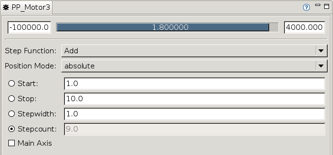
Within the Add step function the positions of the motor axis are defined by a quadruple consisting of start, stop, stepwidth and stepcount. The fourth value (indicated by the radio box selection) is calculated via the following relationship:
In absolute position mode the i-th position is calculated as follows:
Regardless if (stop - start) mod stepwidth ≠ 0 (i.e. the distance between stop and the i-1-th position is less than stepwidth) stop is incorporated.
For relative positioning the i-th position is calculated relative to the motor position mPos at the beginning of the scan module as follows:
As in absolute position mode stop is always incorporated.
Given: Start=1, Stop=10, Stepwidth=1 (absolute) ⇒ Stepcount=9 (calculated)
Motor positions: (1, 2, 3, 4, 5, 6, 7, 8, 9, 10)
Given: Start=1, Stop=10, Stepwidth=2 (absolute) ⇒ Stepcount=5 (calculated)
Motor positions: (1, 3, 5, 7, 9, 10)
Note: The last position (Stop) is always actuated (disregarding the shorter stepwidth).
Given: Start=1, Stop=10, Stepwidth=1, mPos=5 (relative) ⇒ Stepcount=9 (calculated)
Motor positions: (6, 7, 8, 9, 10, 11, 12, 13, 14, 15)
Given: Start=0, Stop=20, Stepcount=50 (absolute) ⇒ Stepwidth=0.4 (calculated)
Motor positions: (0, 0.4, 0.8, ..., 49.2, 49.6, 50)
Note: In this example the step count is given and the step width is calculated.
There are two specific (pseudo-)motors called „Timer” and „msec Timer” allowing to define points in time imitating motor positions. In these cases position mode has the following effects:
The unit of the values is s (seconds) for „Timer” and ms (milliseconds) for „msec Timer”.
There’s a specific (pseudo-)motor called „date Timer” allowing to define a time span with discrete points in time imitating motor positions.
Instead of entering dates and times manually a tooltip offers a more comfortable way:
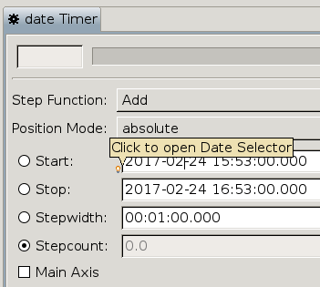
A click on the icon shows a dialog where a date and time could be selected in a calendar:
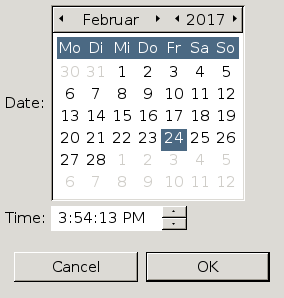
Date and time axes with relative positioning are defined via durations:
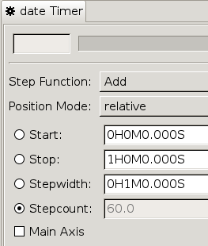
Similar to absolute positioning there is a dialog offering a more comfortable way of input:
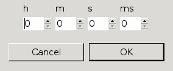
The Multiply mode is also controlled by a given quadruple (start, stop, stepwidth, stepcount) but it differs in the way positions are calculated. The motor positions result by taking the sequence generated by the quadruple as multiplication factors of the initial motor position.
Since its calculation is based on the current motor position the Multiply mode is always relative.
Given: Start=1, Stop=5, Stepwidth=1, mPos=2 (relative) ⇒ Stepcount=4
Motor positions: (2 · 1, 2 · 2, 2 · 3, 2 · 4, 2 · 5) = (2, 4, 6, 8, 10)
Given: Start=1, Stop=10, Stepwidth=2, mPos=2 (relative) ⇒ Stepcount=5
Motor positions: (2 · 1, 2 · 3, 2 · 5, 2 · 7, 2 · 9, 2 · 10) = (2, 6, 10, 14, 18, 20)
The file step function expects a file containing the positions (one per line). If the file is found and parsed correctly some summary statistics are shown:
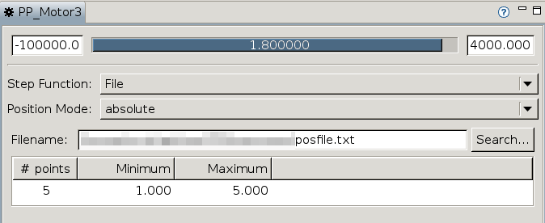
As in the add step function the positions can be used as absolute or relative.
In contrast to the add step function a position file allows sharing of the positions between different scans (scml files). Furthermore non equidistant positions or even gaps can be modeled.
In addition to a file a position list can also be defined directly in the application. The input list is entered in a text field, values are delimited by commata.
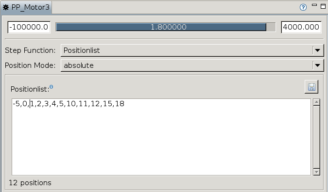
If the list is parsed correctly the number of positions is displayed at the bottom.
Position lists can be used as absolute or relative.
The range step function is like the add step function but it is more powerful. The following syntax is used to define a range:
| syntax | description |
|---|---|
j:k | generates a positionlist from j to k with stepwidth 1 |
j:i:k | generates a positionlist from j to k with stepwidth i |
j:k/n | generates a positionlist from j to k with n steps of equal width |
The above range definitions can be aligned by separating them with comma. A preview shows the resulting position list as well as the number of positions.
Ranges can be used as absolute and relative.
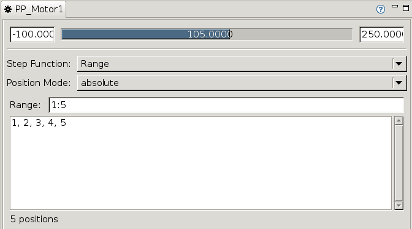
Note: The stop value is incorporated although its distance is lower than stepwidth to the previous position.
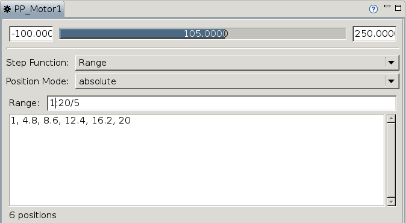
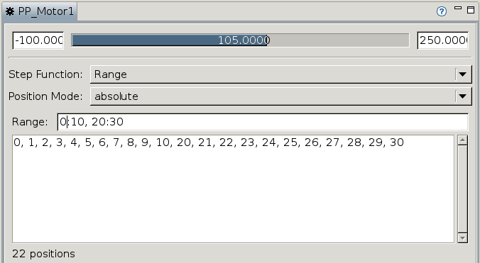
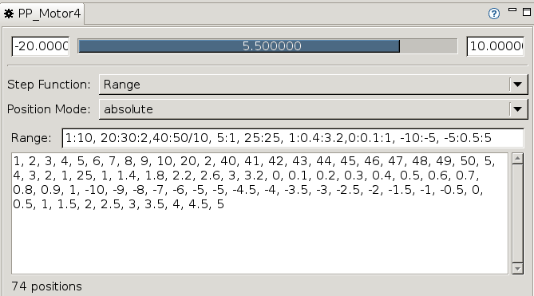
The behavior in the plug-in step function is defined by the chosen plug-in. Depending on the plug-in a number of parameters have to be set.
| Plug-In | absolute | relative | Parameters |
|---|---|---|---|
| MotionDisabled | | | |
| ReferenceAdd | | | summand, referenceaxis |
| ReferenceMultiply | | | factor, referenceaxis |
If this plugin is set, only the position of this axis will be read without positioning
If this plugin is set, the positions of the axis, are the positions of the reference axis with adding a summand.
Given:
Axis 1: Start=1, Stop=5, Stepwidth=1 (absolute) ⇒ Stepcount = 9
Axis 2: summand=4.8, referenceaxis=Axis2, (absolute)
Motor positions:
Axis 1: (1, 2, 3, 4, 5)
Axis 2: (5.8, 6.8, 7.8, 8.8, 9.8)
If this plugin is set, the positions of the axis, are the position of the reference axis multiplied by a factor.
Given:
Axis 1: Start=1, Stop=5, Stepwidth=1 (absolute) ⇒ Stepcount = 9
Axis 2: factor=1.5, referenceaxis=Axis2, (absolute)
Motor positions:
Axis 1: (1, 2, 3, 4, 5)
Axis 2: (1.5, 3, 4.5, 6, 7.5)